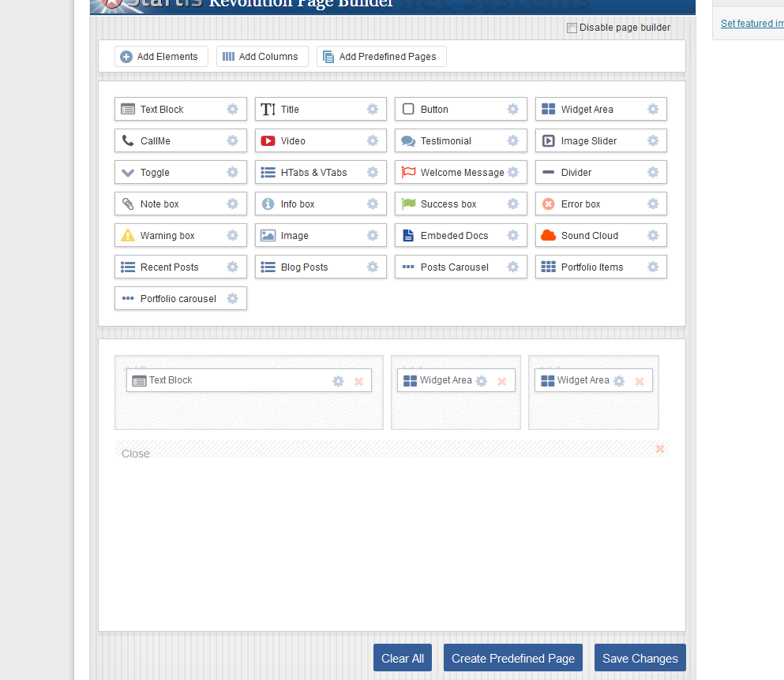

v1.4 by Alan Armanov - www.startis.ru/flatmagazine
- Installation
- Setup Homepage
- Custom Homepage
- Setup Blog Pages
- Setup Contacts Page
- Page Builder
- Shortcodes
- Code Snippets
- Demo XML Data
- Portfolio
- Theme Options
- Credits
- Translation & Localization
Installation
First of all, thank you very much for purchasing this theme. This document describes how to install and use this theme. If you have any questions, feel free to ask them in the dedicated support forum or ThemeForest FlatMagazine page in comments.
Installing WordPress:
WordPress Codex - general information about Wordpress and how to install it on your server
FlatMagazine Pack:
flatmagazine.zip - this is the parent wordpress theme, install this via Wordpress.
flatmagazinechild.zip - this is the child theme for those people who wish to make advanced customizations.
Documentation Folder - Inside is a index.html file, double click that to see all the instructions and videos pertaining to the theme.
Languages Folder - this contains the .mo & .po translation files needed to translate the theme & also contains several languages already translated.
License Folder - this contains the licensing files.
XML Folder - this contains the XML file that you can import to receive our demo data. See that section of these docs for how to import this file.
You can install theme in two ways:
• FTP Upload: Using your FTP program, upload the unzipped theme folder (flatmagazine) into the /wp- content/themes/ folder on your server.
• WordPress Upload: Navigate to Appearance ⇒ Add New Themes ⇒ Upload. Go to browse, and select zipped theme folder. Hit Install Now and the theme will be uploaded and installed.
After uploading it you will need to activate it. Go to Appearance ⇒ Themes and activate your chosen theme
Set the menus
Select your top and main menus
Header Banner
Header Banner code you can change in Appearance ⇒ FlatMagazine Options ⇒ General Settings ⇒ Top Banner Area
Setup Homepage
To setup the Homepage you need to create a new page - Pages ⇒ Add New. Select the “Home template” from the Page Attributes section and hit Publish.
Next, you need to define Front page. Go to Settings ⇒ Reading and configure the Front Page Displays setting. Select the A static pageoption and choose the page you have just created as your front page
HomePage & Content Slider
Use Shortcodes Generator or copy this example:
Slider in Shortcodes Generator
Shortcode structure
[slider][slide url="YOUR LINK" title="Your Title" text="Your Text"] Image or Content e.g. looks like in demo [image src="http://www.startis.ru/flatmagazine/files/2013/06/Kf-zWtSMGkM.jpg" width="595" height="300" retina="true"] [/slide]
[slide url="YOUR LINK" title="Your Title" text="Your Text"] Image or Content e.g. looks like in demo [image src="http://www.startis.ru/flatmagazine/files/2013/06/Kf-zWtSMGkM.jpg" width="595" height="300" retina="true"] [/slide]
[/slider]
HomePage SEO settings
Custom Homepage(Full)
To setup the Homepage you need to create a new page - Pages ⇒ Add New. Select the “Home template - Full width” from the Page Attributes section and hit Publish.
its amazing works with Revoluiton PageBuilder (Any Layouts) - Look 3 Columns page - http://www.startis.ru/flatmagazine/home-pagebuilder-3-cols/
In this example i used 3 columns (1/2) (1/4) (1/4)
You can use it with Widget Areas
Setup Blog
To setup the Blog you need to create a new page - Pages ⇒ Add New enter Title and hit Publish.
Next, you need to define Posts page. Go to Settings ⇒ Reading and configure the Front Page Displays setting. Select the A static page option and choose the page you have just created as your blog page
You can set posts count and hide Related Posts
Setup Contacts Page
To setup the Contacts you need to create a new page - Pages ⇒ Add New enter Title. Next Select the Template Contacts from the Page Attributes section and hit Publish
You can also use the contact sidebar.Revolution PageBuilder
Fist, for example, Drag 3 Columns e.g. 1/3 Columns, and after each column lines drag "Close Section" Element it can be used like a full line colunm, look: in text block you can Use any additional shortcodes and icons, its very usefull and do your page very flexible!
You can created Predefined Pages look, its easy:
in text block you can Use any additional shortcodes and icons, its very usefull and do your page very flexible!
You can created Predefined Pages look, its easy:
Code Snippets
Contact Us
For other snippets use Pages - New Page - Visual editor and hit Shortcodes or PagesHow to Use Shortcodes

How to Use Column Shortcodes
How to Use Icons
Shortcodes Options
[welcome_message button_text="BUTTON TEXT"] Your Content [/welcome_message]
button_text - Button textPage OnLoad Effects Shortcode - [onload_effect after_loading="true" name="from_left" delay="0"]
after_loading - effect when the page is loadedname - effect name (from_left,from_right,from_top,from_bottom,zoomin,zoomout,rotate_from_left,rotate_from_right)
delay - delay after effects (1-10) 1 = 0,3s
[title] Your Title [/title]
[testimonial customer_image="URL" customer="John Doe. Marketing Director STARTIS Inc." url="#"] Your Testimonial Text [/testimonial]
customer_image - customer image urlcustomer - customer name and company
url - customer link
[highlight color="#336699"] Your content [/highlight]
color - highlight background color[dropcap color="#336699"] Your content [/highlight]
color - dropcap color[icon name="icon-camera" size="5x" color="#333333" align="left"]
name - FontAwesome icon namesizes - Increase the icon size by using the large (33% increase), 2x, 3x, 4x, 5x classes
color - icon color
align - left or right
text - text
class - any FontAwesome class
url - icon link
[sbutton],[rsbutton],[bigbutton],[3dbutton]
textcolor - button text colorbgcolor - background color
textshadowcolor - text shadow color
align - left or right
url - button link
[info],[success],[error],[warning],[note]
close - styled box close button[read_more]
text - Read more textalign - left or right
url - link
target - link target
[custom_list]
[custom_list style="list3"]- Your list item
- Your list item
- Your list item
style - bullet styles list1-list12
[toggle title="Title"]content[/toggle]
title - toggle titleHorizontal Tabs [tabs][tab title="title 1" icon="icon-picture"] content [/tab] [tab title="title 3"] content [/tab][/tabs]
title - tabs titleicon - FontAwesome icon name
Vertical Tabs [vtabs][tab title="title 1" icon="icon-picture"] content [/tab] [tab title="title 3"] content [/tab][/vtabs]
title - tabs titleicon - FontAwesome icon name
[accordions] [accordion title="title 1"] content [/accordion] [accordion title="title 2"] content [/accordion] [accordion title="title 3"] content [/accordion] [accordion title="title 4"] content [/accordion] [accordion title="title 5"] content [/accordion][/accordions]
title - accordions title[recent_posts count="5" thumbnail="true" thumb_width="100" thumb_height="100" moretag="true" readmorelink="true" desc_length="240" category_id="12345"]
count - count of poststhumbnail - true or false
thumb_width - image width
thumb_height - image height
moretag - if you use more tags, true or false
readmorelink - show read more link, true or false
readmoretext - read more text, default (Read More)
desc_length - excerpt length
category_id - category id
[recent_posts_slider count="5" thumbnail="true" thumb_width="100" thumb_height="100" moretag="true" readmorelink="true" desc_length="240" category_id="12345"]
count - count of posts slidesthumb_width - slider width
thumb_height - slider height
moretag - if you use more tags, true or false
readmorelink - show read more link, true or false
readmoretext - read more text, default (Read More)
desc_length - excerpt length
category_id - category id
[recent_posts_carousel count="5" thumbnail="true" thumb_width="100" thumb_height="100" moretag="true" readmorelink="true" desc_length="240" category_id="12345"]
count - count of poststhumb_width - image width
thumb_height - image height
category_id - category id
[portfolio_items count="6" category_name="photos" thumb_width="100" thumb_height="100" retina="true"]
count - item countcategory_name - portfolio categories slug
thumb_width - image width
thumb_height - image height
retina - retina 2x images, true or false
[portfolio_items_carousel count="6" category_name="photos" thumb_width="100" thumb_height="100"]
count - item countcategory_name - portfolio categories slug
thumb_width - image width
thumb_height - image height
Content Slider [slider style="blackslider arrowstop" width="600" height="400"] [slide]Images or any content[/slide] [slide]Images or any content[/slide] [slide]Images or any content[/slide] [/slider]
style - blackslider or whiteslider (arrows background), arrows default in middle position? if you want set in top use arrowstop, if bottom use arrowsbutton[image]
src - image urlwidth - image width
height - image height
url - image link
align - left or right
title - alt title
retina - retina 2x images, true or false
[lightbox]
src - image urlwidth - image width
height - image height
url - image link
align - left or right
title - alt title
retina - retina 2x images, true or false
Clients carousel [clients] [client client="Client name" client_url="LINK" image="URL"] [client client="Client name" client_url="LINK" image="URL"] [client client="Client name" client_url="LINK" image="URL"] [client client="Client name" client_url="LINK" image="URL"] [client client="Client name" client_url="LINK" image="URL"] [client client="Client name" client_url="LINK" image="URL"] [client client="Client name" client_url="LINK" image="URL"] [client client="Client name" client_url="LINK" image="URL"][/clients]
image - image urlwidth - image width
height - image height
client - Alt title client name
client_url - client link
[flickr]
id - your Flick ID, use idGettrcount - images cont
display - latest or random
Demo XML Data
The XML file is included within the download package at root level in a folder called XML Navigate to WP Admin > Tools > Import Once its installed, select the XML file and upload it.
Next, navigate to WP Admin > Settings > Reading Settings and set a front page and posts page
Once its installed, select the XML file and upload it.
Next, navigate to WP Admin > Settings > Reading Settings and set a front page and posts page
Portfolio
To create the Portfolio you need to create a new page - Pages ⇒ Add New. Select template from the Page Attributes section - “Portfolio 2 columns”,“Portfolio 3 columns”,“Portfolio 4 columns” or “Portfolio 5 columns” . Next, enter Title and hit Publish.
Portfolio Items
To add a new Portfolio Items you need to create a new items - Portfolio ⇒ Add New Item.
Next, you need to fill in fields:
• Title
• Content
• Select Portfolio page (for connecting with portfolio page)
• Featured Image
• Categories (for filtering items)
• Video url
Theme Options
Styling
if you use BOXED layout you can change background and if you use WIDE layout, you can changed only header background
Credits
Translation & Localization
Select your .po file in pack e.g. ru_RU.po and paste in theme directory
☑ Simplified Chinese - zh_CN.po☑ Traditional Chinese - zh_HK.po
☑ Japanese - ja.po
☑ Italian - it_IT.po
☑ French - fr_FR.po
☑ Russian - ru_RU.po
☑ Deutsch - de_DE.po
☑ Spanish - es.po
☑ Portuguese – Brazilian - pt_BR.po
☑ Norwegian - nb-NO.po
☑ Hungarian - hu_HU.po
☑ Swedish - sv_SE.po
☑ Polish - pl_PL.po
☑ Danish - da_DK.po
If you wont localization in other languages use default.po